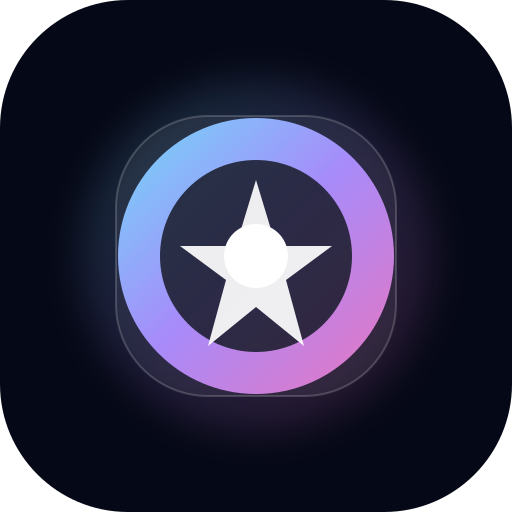

Speed
หน้าเว็บต้องโหลดไว ใช้ง่าย และพาไปยังเครื่องมือที่ต้องการได้ทันที

OBIXCONFIG FPV premium fpv product experience Get the buildOBIXCONFIG FPV is a modern product-grade website concept for FPV pilots, designed to evolve into a real web app, PWA, and mobile app.
Live console
dark, glassy, sharp
one-hand friendly flow
The structure feels like a serious cockpit for pilots who want clarity and action instead of a generic template.
แนะนำทิศทางการจูนจากสไตล์การบิน เพื่อให้เริ่ม tuning ได้เร็วและแม่นขึ้น
The visual direction combines glass surfaces, crisp gradients, premium spacing, and a strong mobile-first layout.
หน้าเว็บต้องโหลดไว ใช้ง่าย และพาไปยังเครื่องมือที่ต้องการได้ทันที
โครงสร้างข้อมูลและคำอธิบายต้องชัดเจนสำหรับทั้งมือใหม่และสายจริงจัง
ภาพรวมแบรนด์ต้องดูน่าเชื่อถือเหมือนเป็น product ที่พร้อมใช้งานจริง
โครงสร้างต้องพร้อมต่อยอดไปยัง PWA, login, cloud sync และ mobile app
Strong contrast, smooth depth, and confident typography create a product that feels premium enough to launch publicly.
hero, tools, preview, CTA
overview and quick actions
analysis, presets, calculators
PWA, login, sync, export
This is the route I would use to keep the project beautiful, stable, and easy to grow.
วางโครงหน้าแรก, navigation, design system, และ component หลักทั้งหมด
สร้างหน้าฟังก์ชันหลักแบบ reuse ได้ และต่อยอดด้วย shared states / data models
เก็บ motion, SEO, performance, accessibility, share preview, และ micro-interactions
เตรียม PWA, saved presets, user profile, sync, and app-store deployment path
A premium product should explain itself quickly and remove confusion for new visitors.
เพราะโปรเจกต์แบบนี้จะโตได้ดีเมื่อมีโครงสร้างใหม่ที่ชัดเจนตั้งแต่แรก ทั้งด้าน UX, design system, และ architecture สำหรับ future app.
เหมาะกับ FPV pilots ทุกระดับ โดยเฉพาะคนที่อยากได้เครื่องมือที่เข้าใจง่าย แต่ยังลึกพอสำหรับการใช้งานจริง.
ได้ และควรออกแบบให้ไปทางนั้นตั้งแต่ต้น เช่น โครงสร้าง page, components, data flow, และ responsive UX.
This is a foundation that feels premium today and stays flexible for tomorrow. Clean structure, sharp visuals, and a clear path to future app expansion.
Clean, modern, and ready for a fresh repository that can grow into a serious FPV product.
HTML + CSS + JS
PWA + Mobile